浮いている物を 1 回で床（Z=0）へ下ろす
高さがばらばらに浮いている 3 つのスザンヌを、それぞれ床の高さ（Z=0）へ下ろします。
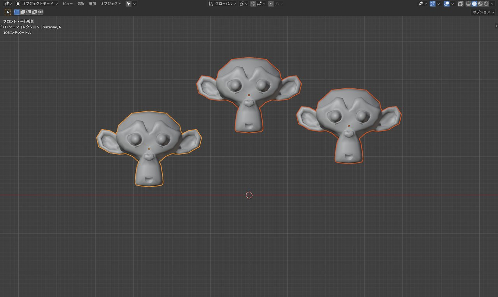
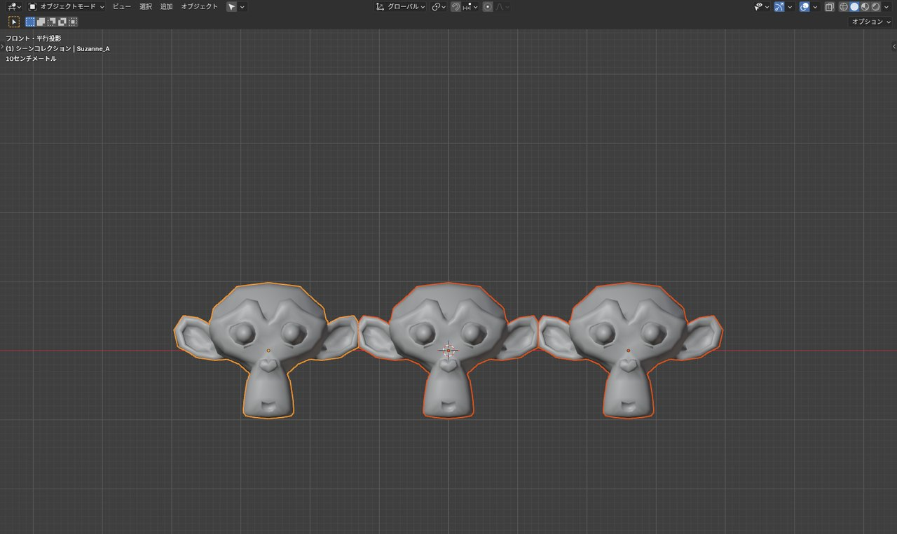
SmartTools アドオン解説書
版 1.0.0 ／ 2026年11月18日 ／ Blender 5.1.2 用
SmartTransform Suite は、3D ビューで物を「動かす・回す・大きさを変える」作業（まとめてトランスフォーム＝変形と呼びます）を助けるアドオンです。サイドバーの 1 枚のパネルに、数字で値を入れる欄、クリックとドラッグの挙動の設定、独自のギズモ（画面に出る矢印や輪の取っ手）の設定、そして整列・複数オブジェクト編集・選択の誤り防止などの「その他ツール」がまとまっています。裏で動き続ける機能の多くは初めは止まっていて、使いたい物だけをオンにして使います。キーボードの G・R・S などへの割り当ては自動では作りません。使いたい時は、パネルの「コピー」で登録 ID をコピーして、自分でキーマップに登録します。
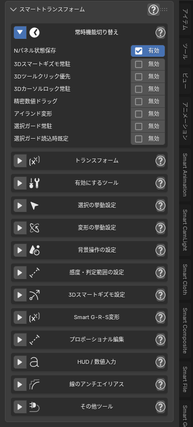
オブジェクトモードの3DビューポートでNキーを押し、「Smart Transform」タブを選びます。写真と同じ設定を見るには「常時機能切り替え」を開きます。
この写真は「常時機能切り替え」の個別設定で、各行の右側のボタンが有効・無効を示します。
オブジェクトモードで箱を選び、絶対値でZ寸法を2 mにします。入力後は寸法のZを確認します。位置のZは高さの確認には使いません。
オブジェクトの寸法欄でZが2 mになったか確認します。
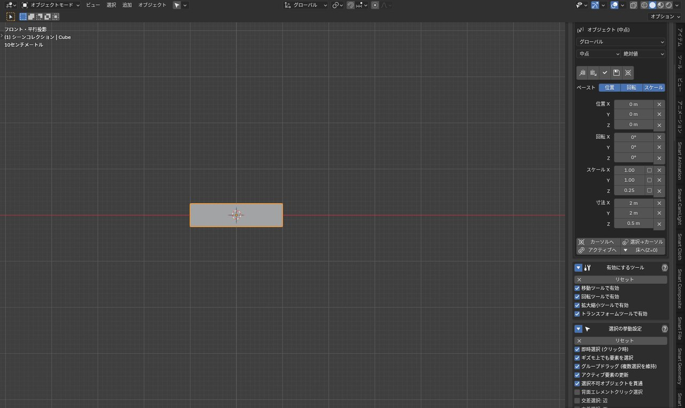
コレクション加算で別メッシュの物は編集対象になり、元とメッシュを共有する複製は加わりません。どの物が編集対象か、網目で確かめられます。
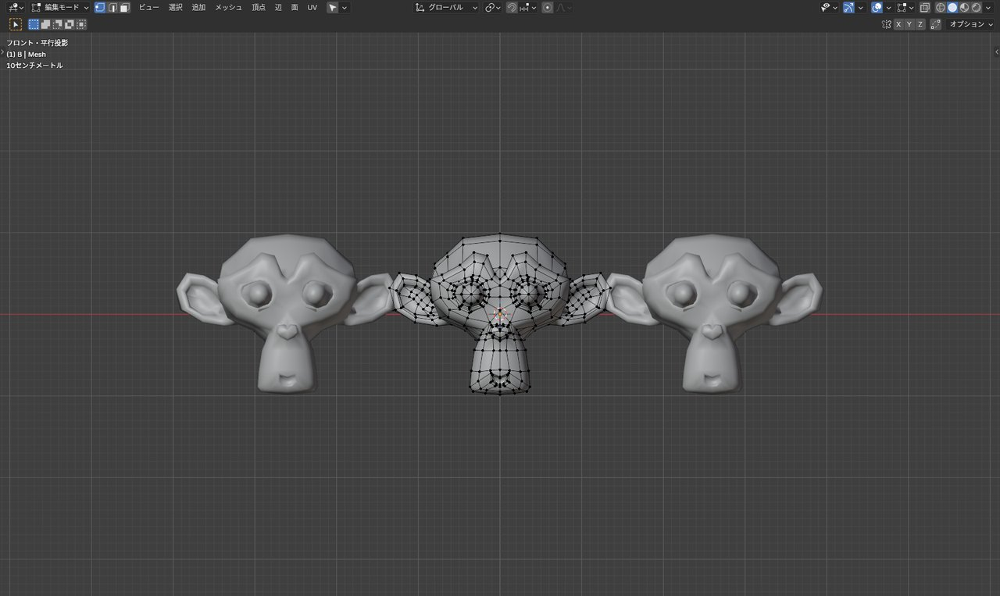
試す前に リンク複製と単独メッシュの両方を用意し、本文の条件で試す。
この作例の手順を見る作例を画像で保存 (PNG)導入・トラブルのヘルプ
高さがばらばらに浮いている 3 つのスザンヌを、それぞれ床の高さ（Z=0）へ下ろします。


X の向きに 2 倍に伸ばしたスザンヌを、「寸法 X」の欄の右の「×」でスケール 1 の時の長さに戻します。
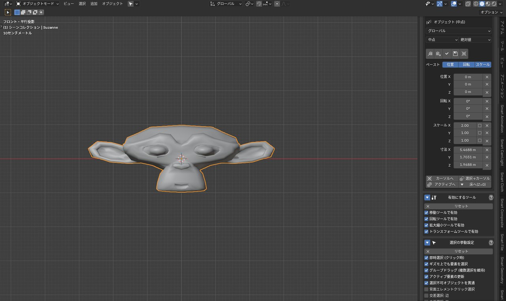
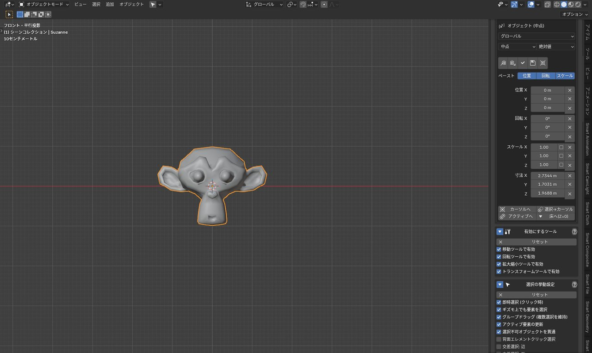
物の位置・回転・大きさを数字でぴったり決めたり、クリックやドラッグで動かす操作を使いやすくしたりする道具をまとめたアドオンです。
このアドオンを使うと、画面は次のように変わります。くわしい操作は 5 章の各機能の「実例」で説明します。
実例浮いている物を 1 回で床（Z=0）へ下ろす（3 つのスザンヌで試した様子）
高さがばらばらに浮いている 3 つのスザンヌを、それぞれ床の高さ（Z=0）へ下ろします。
見どころ：「個別」なので、3 つとも自分の原点が Z=0（赤い横線の高さ）に来ます。横の位置は変わりません。「中点」のままだと、3 つの真ん中が Z=0 に来るように全体がまとめて動きます。
実例編集モードのまま別のメッシュを編集に加える（3 つのスザンヌで試した様子）
1 つのスザンヌを編集している途中で、同じコレクションのスザンヌを編集の組に足します。編集モードを出る必要はありません。
見どころ：前は真ん中のスザンヌだけに網目（頂点と辺）が出ています。後は左右のスザンヌにも網目が出て、3 つをまとめて編集できます。
このアドオンならではの機能を、図に番号を付けて説明します。図の中の番号と、図の下の一覧の番号が対応しています。図を押すと大きく表示されます。設定の一つ一つは 5 章の各見出しで説明します。
Blender 標準のトランスフォームツールのギズモ（左）と、SmartTransform Suite のスマートギズモ（右）を、同じ視点・同じ選択で並べました。スマートギズモは、面（2 軸）の移動と拡大縮小、中心での均等拡大縮小、トラックボール回転までを 1 つのギズモに収めています。回転の輪は一周すべてが表示されます。トランスフォームツールに持ち替えれば、ほとんどの変形をこのギズモ 1 つで済ませられます。
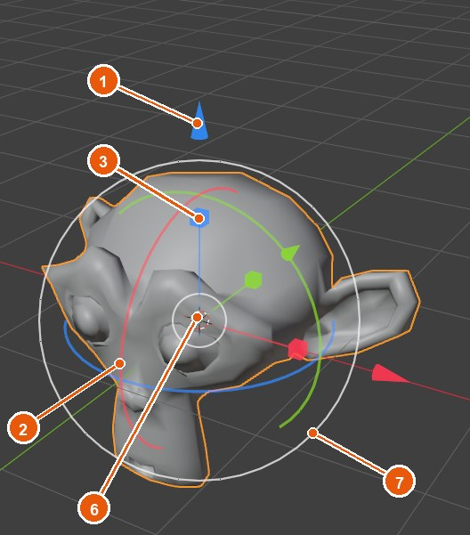
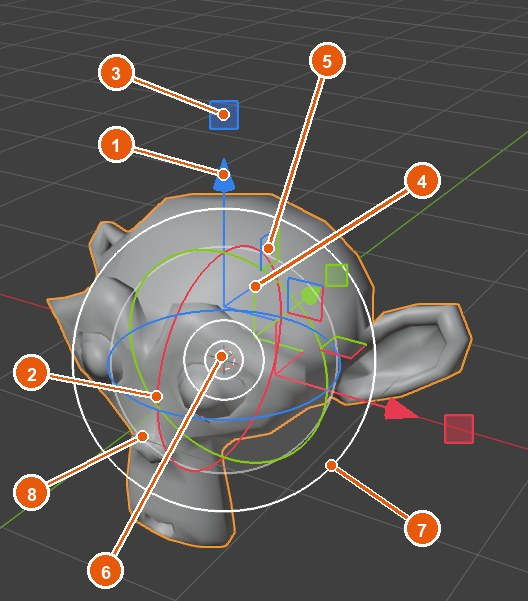
回転ツールでは 3 本の輪と 2 つの円、拡大縮小ツールでは軸の箱と面の取っ手が出ます。編集モードでは、選んだ頂点・辺・面の位置にギズモが出ます。
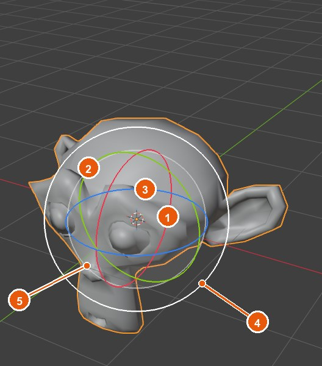
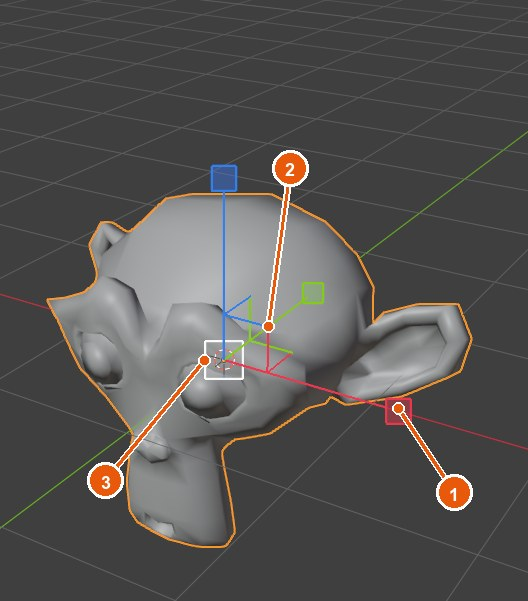
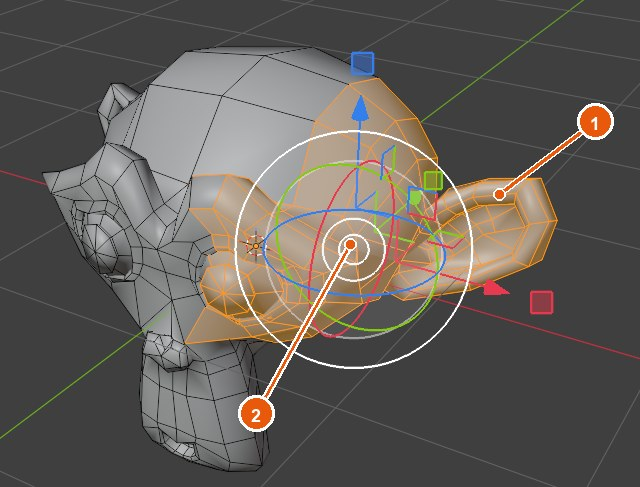
くわしい設定：5-8. 3Dスマートギズモ設定
アドオンの入れ方・画面を日本語にする方法・N パネルと「？」ヘルプの共通の使い方は、「SmartTools 全体仕様書」にまとめています。先にそちらの 2〜5 章を読んでください。
| 入れる ZIP | SmartTransformSuite_1.0.0.zip |
|---|---|
| Blender の画面での名前 | Smart Transform |
| 動く Blender | 5.1.2 |
3D ビューのサイドバー（N キーで開く右側の欄）の「Smart Transform」タブに、「スマートトランスフォーム」というパネルが 1 枚出ます。ほかに、数値入力の小さな窓（ポップアップ）、3D ビューの上の帯に出るボタン、3D ビューの「オブジェクト」メニューとアウトライナーのコレクションの右クリックメニューへの追加項目があります。
| 出る画面 | 3D ビュー（サイドバー・上の帯・オブジェクトメニュー）、アウトライナー（コレクションの右クリックメニュー） |
|---|---|
| タブ | Smart Transform |
| モード | 主にオブジェクトモード。メッシュの編集モードやポーズモードで働く機能もあります。 |
画面の上から順に、見出しごとに説明します。見出しの右の「？」を押すと、同じ内容の説明が画面にも出ます。青い枠の「実例」は、スザンヌなどの簡単なモデルで実際に操作し、3D ビューでの変化を前と後で並べたものです。
ボタンを押していない間も裏で待っている機能を、ここでまとめてオン・オフします。初めは閉じています。使わない機能をオフにしておくと、Blender の起動や待ち時間が軽くなります。
場所パネルのいちばん上の見出し「常時機能切り替え」。
| 表示 | 働き |
|---|---|
| 「有効」／「無効」のボタン | 各行の右のボタンです。押すたびに「有効」と「無効」が切り替わります。状態はすぐに保存され、Blender を開き直しても残ります。 |
| Nパネル状態保存 | このパネルで変えた設定を Blender の設定フォルダーに保存して、次に起動した時に戻すかどうかです。初めは有効です。 |
| 3Dスマートギズモ常駐 | 独自の 3D スマートギズモの表示と、マウスを重ねた時の反応を、ツールを使う前から常に待たせます。有効にすると、トランスフォームツールなどで独自のギズモが出ます。初めは無効です。 |
| 3Dツールクリック優先 | 移動・回転などのツールでのクリックを、このアドオンの処理で受けます。Blender 標準や他のアドオンの選択のキーマップは止めません。Shift・Ctrl・Alt を押しながらのクリックは Blender 標準の処理に渡すので、選択の解除やループ選択はそのまま使えます。初めは無効です。 |
| 3Dカーソルロック常駐 | 「3Dカーソルロック」の機能そのものをオンにします。オンの間だけ 3D ビューの上の帯に鍵のボタンが出ます。初めは無効です。 |
| 精密数値ドラッグ | 数値欄を Shift＋左ドラッグで決まった刻みずつ動かす機能をオンにします。初めは無効です。 |
| アイランド変形 | メッシュのつながった部品ごとに変形する機能をオンにします。初めは無効です。 |
| 選択ガード常駐 | スマート選択ガードの見張りを今のシーンで動かし、これから設定するシーンの初めの値にもします。待っている間を軽くしたい時は無効にします。初めは無効です。 |
| 選択ガード読込時既定 | ファイルを開いた時に、スマート選択ガードの既定の設定をシーンに 1 回当てはめます。シーンの準備を自動にしたい時だけ有効にします。初めは無効です。 |
選んだ物の位置・回転・スケール・寸法を数字で見たり入れたりする場所です。値のコピーと貼り付け、適用、スナップのボタンもあります。サイドバーの数値の欄はどのモードでも同じ形で表示され、値が実際に変わるのは、オブジェクトモードで選んだ物がある時です。
場所「常時機能切り替え」の下の見出し「トランスフォーム」。初めは開いています。
| 表示 | 働き |
|---|---|
| オブジェクト／モード／対象 | いま操作の対象になっている物の名前、今のモード（「オブジェクト」「編集」など）、対象の種類（「オブジェクト」「ボーン」「頂点」など）を表示します。アクティブな物が無い時は「アクティブなオブジェクトなし」と出ます。 |
| 設定：シーンの変形方向を使う | オンにすると、値を読む向き（座標系）を、Blender の画面の上で選んでいる座標系に合わせます。初めはオンです。 |
| 設定：Δ表示 | 「差分」で入れる時の欄の動きです。「ノブ」は最後に入れた値を表示したままにします。「自動ゼロ」は入れたらすぐ元の値（0 など）に戻します。 |
| 設定：Δ拡縮 | スケールを「差分」で入れる時の数え方です。「係数」は掛け算（1.1 で 10% 大きく）、「加算」は足し算（0.1 で 10% 大きく）です。 |
| 設定：スケールリンク軸（X／Y／Z） | オンにした軸どうしは、どれか 1 つのスケールを変えると、他のオンの軸も同じように変わります。オフの軸は別々に動きます。 |
| 設定：ポーズ | ポーズモードで「個別」を選んだ時の回転のしかたです。「チャンネルボックス」はボーンの回転の値だけを変えます。「方向ピボット」は選んだ座標系で、ボーンの根元を中心に回します。 |
| ポップアップを開く | 同じ数値の欄を小さな窓で開きます。詳しくは「トランスフォームポップアップ」の章を見てください。 |
| 座標系・「中点」／「個別」・「絶対値」／「差分」の 3 つの選び欄 | 上の欄で値を読む座標系（図では「グローバル」）を、下の左の欄で選んだ物をひとまとまりで扱うか（「中点」）1 つずつ扱うか（「個別」）を、下の右の欄で入れた数字をそのままの値にするか（「絶対値」）今の値に足すか（「差分」）を選びます。 |
| アイコンだけのボタン 5 つ | 選び欄の下に並ぶ 5 つのボタンです。左から、アクティブな物（またはアクティブなポーズボーン）の位置・回転・スケールを覚える「コピー」、覚えた値を選んだ物に貼る「ペースト」、回転とスケールを今の見た目のまま確定する「回転/スケール適用」（チェックの印）、位置・回転・スケールを全部確定する「全適用」、選んだ物を 3D カーソルへ動かす「カーソルへスナップ」です。2 つの適用は確認の窓が出て、オブジェクトモードでだけ働きます。 |
| ペーストの切り替え（位置／回転／スケール） | ボタンの下の 3 つの切り替えで、「ペースト」で貼る物を選びます。オフの物は変わりません。3 つともオフの時は「ペースト」を押せません。初めは 3 つともオンです。 |
| 位置 X／回転 X／スケール X／寸法 X（と、その下の Y・Z） | 数字を入れる欄です。寸法は物の実際の長さです。位置・回転・スケールの欄の右の「×」を押すと、その欄が元の値（スケールは 1、位置と回転は 0）に戻ります。寸法の欄の「×」はスケール 1 の時の長さに戻します（オブジェクトモードだけ）。「原点のみ」などの影響範囲の設定は、寸法の欄へ入力した時と同じように効きます。長さが 0 の物（エンプティなど）は変わりません。スケールの欄の右の四角は、スケールリンク軸のオン・オフです。 |
| カーソルへ | 選んだ物を 3D カーソルの位置へ動かします。「中点」の時は全体の中心が、「個別」の時はそれぞれが 3D カーソルへ動きます。編集モードやポーズモードでも働きます。 |
| 選択→カーソル | 3D カーソルを、選んだ物（編集モードでは選んだ頂点など）の中心へ動かします。 |
| アクティブへ | 選んだ物を、アクティブな物（最後に選んだ物）と同じ位置へ動かします。オブジェクトモードでだけ働きます。 |
| 床へ(Z=0) | 選んだ物の高さを Z=0 にそろえます。オブジェクトモードでは、「中点」の時は全体の中心が、「個別」の時はそれぞれの原点が Z=0 に来ます。編集モードやポーズモードでも働きます。 |
実例浮いている物を 1 回で床（Z=0）へ下ろす（3 つのスザンヌで試した様子）
高さがばらばらに浮いている 3 つのスザンヌを、それぞれ床の高さ（Z=0）へ下ろします。
見どころ：「個別」なので、3 つとも自分の原点が Z=0（赤い横線の高さ）に来ます。横の位置は変わりません。「中点」のままだと、3 つの真ん中が Z=0 に来るように全体がまとめて動きます。
実例3D カーソルの所へ物を動かす（スザンヌで試した様子）
先に 3D カーソルを置いておき、選んだスザンヌをその位置へ一気に動かします。
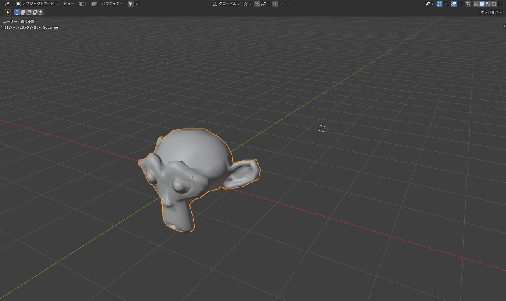
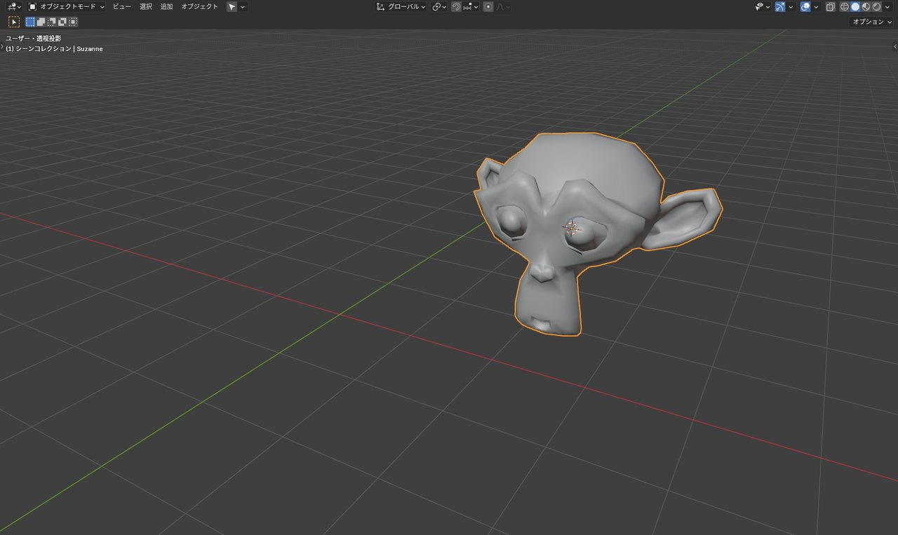
見どころ：スザンヌが、赤白の輪の 3D カーソルの位置へ移ります。向きと大きさは変わりません。
実例向きと大きさを別の物へ写す（コピーとペースト）（2 つのスザンヌで試した様子）
傾けて大きくした左のスザンヌの回転とスケールを覚え、右のスザンヌへ貼り付けます。位置はそのままにします。
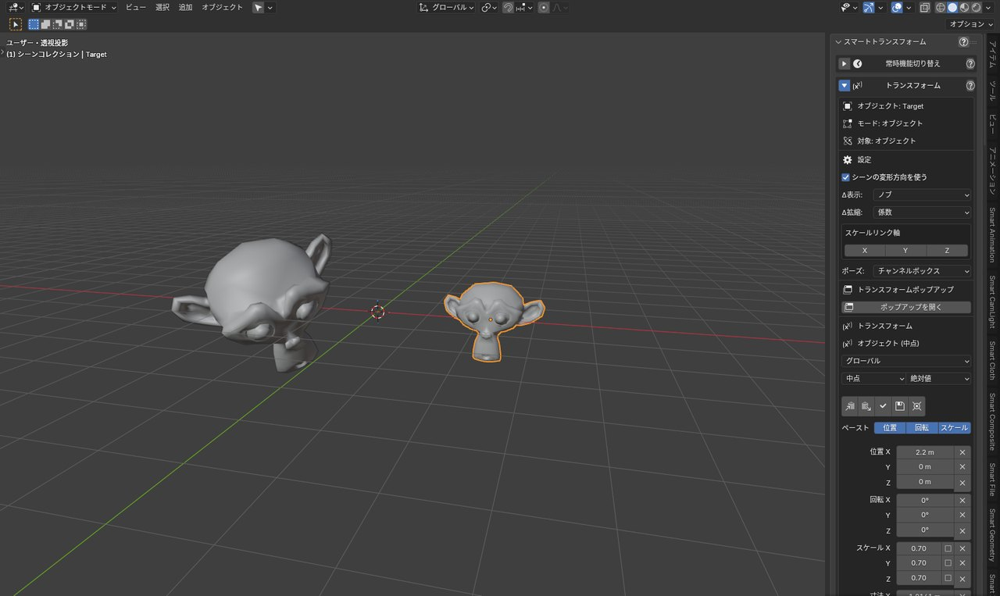
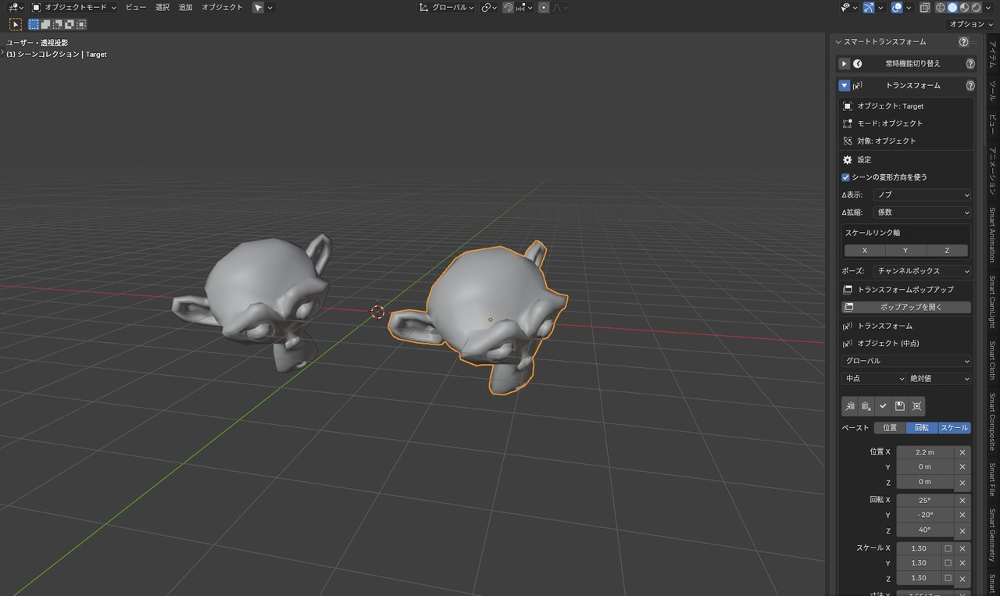
見どころ：右のスザンヌが、左と同じ傾きと大きさになります。切り替えの「位置」をオフにしたので、右の位置は動きません。
実例大きさだけを別の物へ揃える（2 つのスザンヌで試した様子）
左のスザンヌの大きさだけを、右のスザンヌへ貼り付けます。右の位置と向きはそのままです。
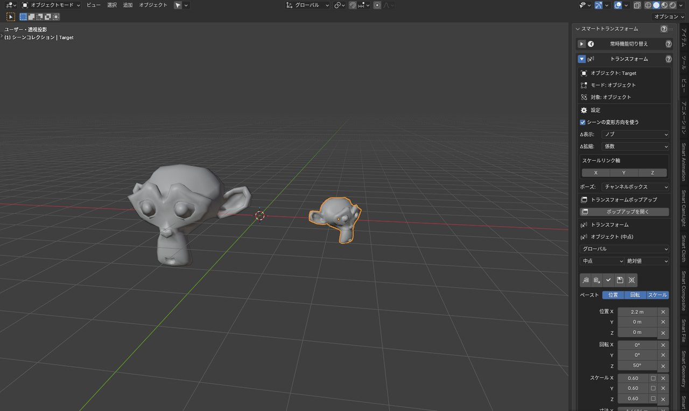
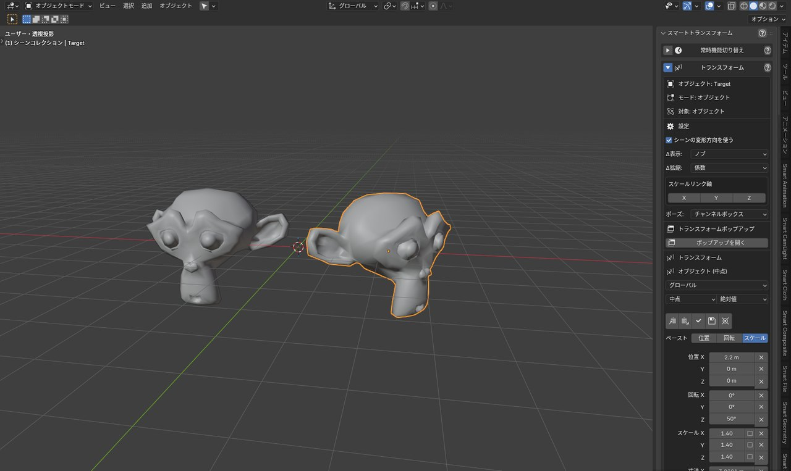
見どころ：右のスザンヌは左と同じ大きさになります。切り替えをオフにした位置と回転は変わらないので、右を向いたまま、同じ場所で大きくなります。
実例高さを実際の長さで決める（立方体で試した様子）
2 m の立方体の高さを、「寸法」の欄に数字を入れて 0.5 m にします。
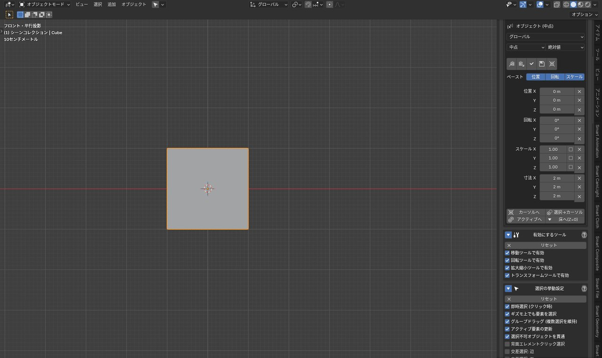
見どころ：高さだけが 0.5 m になり、幅と奥行きは 2 m のままです。「スケール」の Z の欄も、合わせて 0.25 に変わります。
Blender のどの変形ツールを使っている時に、このアドオンのクリック・ドラッグの処理を使うかを選びます。
場所見出し「有効にするツール」。
| 表示 | 働き |
|---|---|
| リセット | この見出しの中の設定を初めの値に戻します。 |
| 移動ツールで有効 | 移動ツールの時にこのアドオンの処理を使います。 |
| 回転ツールで有効 | 回転ツールの時にこのアドオンの処理を使います。 |
| 拡大縮小ツールで有効 | 拡大縮小ツールの時にこのアドオンの処理を使います。 |
| トランスフォームツールで有効 | 移動・回転・拡大縮小をまとめたトランスフォームツールの時にこのアドオンの処理を使います。 |
3D ビューでマウスを押した時やドラッグを始めた時に、選択をどう扱うかを決めます。
場所見出し「選択の挙動設定」。
| 表示 | 働き |
|---|---|
| リセット | この見出しの中の設定を初めの値に戻します。 |
| 即時選択 (クリック時) | マウスを押した瞬間に、その下の物を選びます。オフにすると、ボタンを離した時に選びます。 |
| ギズモ上でも要素を選択 | ギズモの取っ手と、選べる物や頂点などが重なった所をクリックした時、ボタンを離すとその物を選びます。ドラッグした時は、ギズモの取っ手の操作が始まります。 |
| グループドラッグ (複数選択を維持) | 複数選んである物のどれかをドラッグした時に、選んだ物をまとめて動かします。 |
| アクティブ要素の更新 | もう選んである物をクリックした時に、その物をアクティブ（白く強調される物）にします。 |
| 選択不可オブジェクトを貫通 | オブジェクトモードで、選べない設定の物の奥にある物を選べるようにします。 |
| 背面エレメントクリック選択 | メッシュの編集モードで、同じ所に重なっている頂点・辺・面を、同じ所を続けてクリックするたびに順に選びます。ボックス・投げ縄・サークル選択は変わりません。初めはオフです。 |
| 交差選択: 辺／交差選択: 面 | メッシュの編集モードで、ボックス・投げ縄・サークル選択の範囲に少しでもかかった辺や面も選ぶようにします。オフでは Blender 標準の選び方です。初めはオフです。 |
| キーマップ登録 | クリック選択の処理を自分でショートカットに登録したい時に使います。「3Dクリック処理ID」と「3D単独精密選択ID」の「コピー」で登録 ID をコピーし、3Dビューの場所に登録します。普段は使いません。 |
ドラッグで直接変形を始めるかどうかなど、変形のしかたを決めます。
場所見出し「変形の挙動設定」。
| 表示 | 働き |
|---|---|
| リセット | この見出しの中の設定を初めの値に戻します。 |
| ドラッグで変形開始 | ドラッグするとすぐに変形が始まります。オフにすると、ドラッグしても選ぶだけです。 |
| 軸拘束の記憶 | 直前に使った軸の限定（X だけなど）を覚えて、次の操作にも使います。 |
| ギズモ円周回転 | Smart G-R-S とスマートギズモでの回転のしかたです。オンでは、変形の中心のまわりをマウスで回すように動かして回転します。オフでは、画面の上でマウスを動かした量で角度が変わります。初めはオンです。 |
| ギズモ距離スケール | Smart G-R-S とスマートギズモでの拡大縮小のしかたです。オンでは、中心から遠ざけると大きく、近づけると小さくなります。オフでは、マウスを右か上へ動かすと大きく、左か下へ動かすと小さくなります。初めはオンです。 |
| マイナススケール禁止 | 拡大縮小ツールとトランスフォームツールの拡大縮小で、値が 0 を越えてマイナス（裏返し）にならないようにします。初めはオンです。 |
物の上ではなく、3D ビューの何もない所でクリックやドラッグをした時の動きを決めます。
場所見出し「背景操作の設定」。
| 表示 | 働き |
|---|---|
| リセット | この見出しの中の設定を初めの値に戻します。 |
| 背景クリックで全解除 | 何もない所をクリックすると、選択を全部外します。 |
| 背景ドラッグで矩形選択 | 何もない所からドラッグすると、すぐに四角い選択の枠が出て、ボタンを離した時に枠の中を選びます。 |
どれだけマウスを動かしたらドラッグとみなすか、頂点や辺をどれだけ近くで拾うかを決めます。Smart G-R-S などのマウスの感度もここにあります。
場所見出し「感度・判定範囲の設定」。中に折りたたみ「ドラッグ感度」があります。
| 表示 | 働き |
|---|---|
| リセット | この見出しの中の設定を初めの値に戻します。 |
| ドラッグ開始距離 (px) | 押してからこのピクセル数だけ動かすと、ドラッグとして扱います。 |
| 頂点の判定半径 (px) | カーソルからこの距離の中にある頂点を拾います。小さい頂点を選びにくい時は大きくします。 |
| 辺の判定半径 (px) | カーソルからこの距離の中にある辺を拾います。近くの辺を間違えて選ぶ時は小さくします。 |
| ドラッグ感度 | 折りたたみの中に「移動 (G) 感度」「回転 (R) 感度」「スケール (S) 感度」の行があり、それぞれ左の欄「通常」に普段の速さ、右の欄「Shift」に Shift を押した時の速さを入れます（パネルが狭いと文字は出ず数値だけになります）。大きいほど速く動きます。この中にも「リセット」があります。 |
このアドオン独自のギズモ（画面に出る矢印や輪の取っ手）を、どのツールで出すか、どの大きさ・色にするかを決めます。
場所見出し「3Dスマートギズモ設定」。
| 表示 | 働き |
|---|---|
| リセット | この見出しの中の設定を初めの値に戻します。 |
| 3Dスマートギズモ: 回転／拡大縮小／トランスフォーム | 回転ツール・拡大縮小ツール・トランスフォームツールで、独自のギズモを出すかどうかです。 |
| 移動／回転／拡大縮小（その下の 3 つのボタン） | トランスフォームツールのギズモに、移動・回転・拡大縮小のどの取っ手を出すかを選びます。押して青くなっている物が出ます。 |
| 表示スケール | ギズモ全体の画面上の大きさです。 |
| XYZ軸／平面軸／フリー軸 | 軸の取っ手、面の取っ手、中央の自由に動かす取っ手の大きさです。 |
| ギズモ判定範囲 (px) | 取っ手をつかめる範囲のピクセル数です。つかみにくい時は大きくします。 |
| 3Dスマートギズモカラー（X／Y／Z／フリー軸カラー／ハイライトカラー） | 各軸の取っ手の色、中央の取っ手の色、マウスを重ねた時や操作中の色です。 |
| キーマップ登録 | ギズモの表示を切り替えるショートカットを自分で作りたい時に使います。「切り替え登録ID」の「コピー」で登録 ID をコピーします。アドオンは自動では登録しません。 |
実例独自のギズモを 3D ビューに出す（スザンヌで試した様子）
トランスフォームツールを使っている時に、このアドオン独自のギズモを出し、色と大きさを変えます。
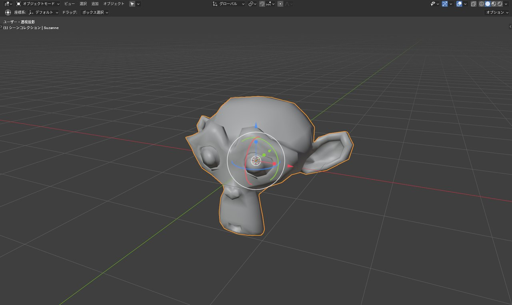
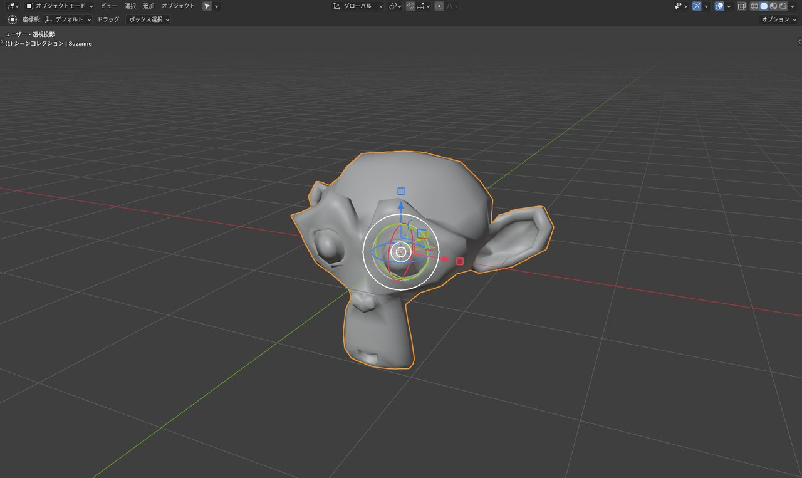
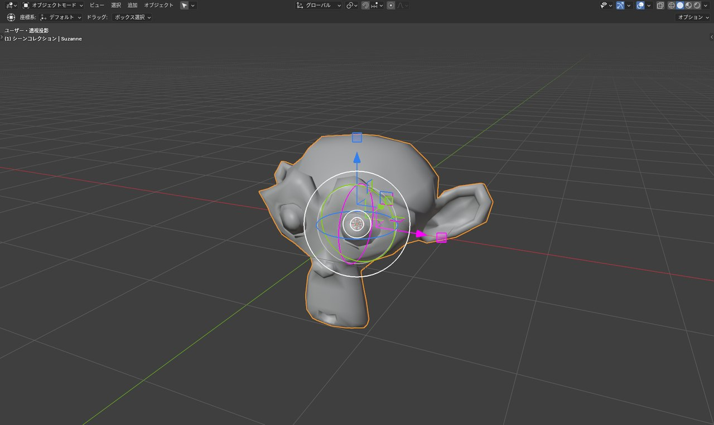
見どころ：「3Dスマートギズモ: トランスフォーム」がオンの時、スザンヌの上に独自のギズモが出ます。「表示スケール」と色の設定は、すぐ画面に反映されます。
Smart G-R-S は、Blender の G（移動）・R（回転）・S（拡大縮小）の代わりに使える変形操作です。画面に値を出す表示（HUD）、スナップ、軸の線などが付きます。使うには、下の登録 ID を自分でキーマップに登録します。登録しなければ、標準の G・R・S はそのままです。
場所見出し「Smart G-R-S変形」。中に折りたたみ「スナップ / プロポーショナル」「スケールの挙動」「軸拘束ライン」があります。
| 表示 | 働き |
|---|---|
| スナップ / プロポーショナル | 「スナップ刻み」の行で、移動・回転・スケールのスナップの刻みを決めます。「プロポ（オブジェクトモード）」の下の「基準」（図では「原点」）で、オブジェクトモードのプロポーショナル編集の距離の測り方を、「減衰」（図では「Blender」）で効き方の弱まり方を選びます。 |
| スケールの挙動 | 「マイナススケール禁止」で、Smart G-R-S の拡大縮小で値がマイナス（裏返し）にならないようにするかどうかを決めます。初めはオン（マイナスにしない）です。 |
| 軸拘束ライン | 「中ボタンで平面拘束を許可」「ラインを前面に表示（透過）」「太さ」「選択中」（選んでいる軸の線の太さ）と、軸ごとの色（X・Y・Z と、それぞれの「暗」）を決めます。「リセット」で初めの値に戻ります。 |
| キーマップ登録 | 「移動G登録ID」「回転R登録ID」「スケールS登録ID」が並びます。「コピー」で登録 ID をコピーし、プリファレンスのキーマップの 3Dビューに登録します。 |
プロポーショナル編集（動かした所の周りも少しずつ一緒に動く機能）の影響範囲を、カーソルを動かして決めるための設定です。
場所見出し「プロポーショナル編集」。中に折りたたみ「プロポーション半径調整」と「Smart G-R-S のプロポーション調整」があります。
| 表示 | 働き |
|---|---|
| リセット | この見出しの中の設定を初めの値に戻します。 |
| 実行 | 「プロポーション半径調整」の中のボタンです。影響範囲をカーソルの動きで調整する道具を始めます。 |
| 影響円 | 「実行」の右のボタンです。押して青くなっている間、影響範囲を示す円を画面に出します。見た目だけの表示で、プロポーショナル編集の設定は変えません。 |
| 線幅(px)／円カラー | 影響円の線の太さと色です。 |
| カーソルロック | 「Smart G-R-S のプロポーション調整」の中のボタンです。Smart G-R-S の変形中に影響範囲を連続で調整する間、画面のカーソルを動かさないようにします。 |
| キーマップ登録 | カーソルで調整する道具の「カーソル調整登録ID」（登録場所は 3Dビュー）と、変形中に範囲を変える操作の「連続調整モーダルID」「拡大モーダルID」「縮小モーダルID」（登録場所はトランスフォームモーダルマップ）です。 |
Smart G-R-S を使っている時に画面に出る、値や状態の表示（HUD）の見た目を決めます。
場所見出し「HUD / 数値入力」。
| 表示 | 働き |
|---|---|
| HUD | HUD を出すかどうかです。 |
| ヘルプ | Smart G-R-S を始めた時に、HUD に操作の説明を最初から出すかどうかです。操作中は H キーで出し入れできます。 |
| 基準 | HUD を画面の決まった場所に出す（「ビューに固定」）か、ギズモの近くに出す（「ギズモに固定」）かを選びます。 |
| オフセットX(px)／オフセットY(px) | HUD の位置を横・縦にずらす量です。 |
| フォントサイズ／文字色 | HUD の文字の大きさと色です。 |
このアドオンが画面に描く線（ギズモ、軸の線、影響円など）を、どの方法でなめらかにするかを選びます。
場所見出し「線のアンチエイリアス」。
| 表示 | 働き |
|---|---|
| スムーズ／標準AA／AAなし | 「スムーズ」は線を 2 回描いて一番きれいにします。「標準AA」は Blender の機能を使って 1 回で描きます。「AAなし」はなめらかにせず、一番速く描きます。 |
このアドオンに入っている、いくつかの別の道具の設定をまとめた場所です。中に道具ごとの折りたたみが並びます。
場所見出し「その他ツール」。
| 表示 | 働き |
|---|---|
| 影響の限定を全オブジェクトへ適用 | Blender の「オプション」の「影響の限定」（「原点」「位置」「親」だけを動かす設定）を、スマートギズモと Smart G-R-S で、エンプティなどメッシュ以外の物にも使うかどうかです。オフにすると、選んだ物が全部メッシュの時だけ使います。初めはオンです。 |
| 道具ごとの折りたたみ | 「3Dカーソルロック」「精密数値ドラッグ」「カスタム選択切り替え」「クイック整列」「クイック複数編集」「アイランド変形」「頂点法線アライナー」「スマート選択ガード」が並びます。使いたい物だけを開きます。 |
3D カーソルを今の場所に固定し、うっかり動かないようにする道具です。
場所「その他ツール」の中の折りたたみ「3Dカーソルロック」と、3D ビューの上の帯。
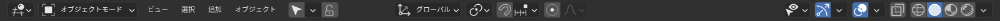
| 表示 | 働き |
|---|---|
| 3Dカーソルロック常駐 | 「常時機能切り替え」と同じスイッチです。この節の中でも有効と無効を切り替えられます。 |
| 鍵のボタン（3D ビューの上の帯） | 機能が有効な間だけ、上の帯のメニューの並びの右に出ます。押すと今のシーンの 3D カーソルの位置を覚えて固定し、もう一度押すと固定を外します。固定している間は、3D カーソルを動かす操作をしても元の場所に戻ります。 |
実例3D カーソルを固定して、動かないようにする（スザンヌで試した様子）
鍵のボタンで 3D カーソルを固定すると、3D カーソルを動かす操作をしても元の場所に残ります。
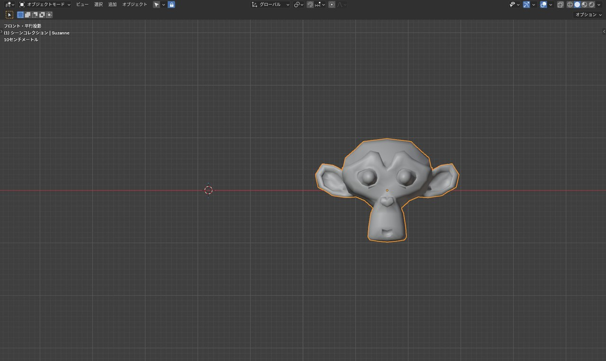
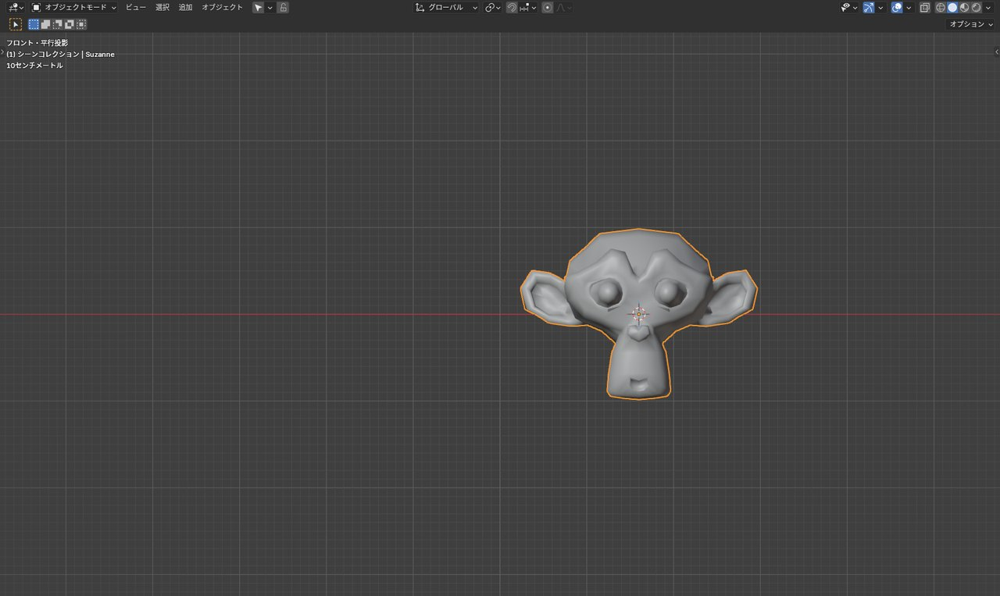
見どころ：固定している間は「選択→カーソル」を押しても、3D カーソル（赤白の輪）は左に残ります。固定を外すと、スザンヌの所へ動きます。上の帯の鍵の絵も見てください。
Blender の数値欄（回転・長さ・質量・時間・温度の小数の欄）を Shift＋左ドラッグした時に、決めた刻みずつ値が変わるようにする道具です。
場所「その他ツール」の中の折りたたみ「精密数値ドラッグ」。
| 表示 | 働き |
|---|---|
| Blender単位別刻み（回転／長さ／質量／時間／温度） | それぞれの種類で 1 回に動く量です。単位は「シーンプロパティ > 単位」で選んでいる物が使われ、欄の右に表示されます。 |
| キーマップ登録 | 「登録ID」の「コピー」で登録 ID をコピーします。登録場所はプリファレンス > キーマップ > スクリーン > スクリーン編集です。Shift＋左マウスの「Press」として自分で登録します。 |
移動・回転などのツールを使ったまま、背景をドラッグした時の選び方（長押し・ボックス・サークル・投げ縄）を順に切り替える道具です。
場所「その他ツール」の中の折りたたみ「カスタム選択切り替え」。
| 表示 | 働き |
|---|---|
| カスタム選択切り替えを実行 | 選び方を次の物に 1 回切り替えます。 |
| 選択モード：現在 | 今の選び方を表示します。ここで直接選ぶこともできます。 |
| 長押し／ボックス選択／サークル選択／投げ縄選択 | 切り替えの順番に入れる選び方です。押して青くなっている物を順に回り、オフにした物は飛ばします。 |
| キーマップ登録 | ショートカットで切り替えたい時に、「登録ID」の「コピー」で登録 ID をコピーします。登録場所は 3Dビューです。 |
2 つ以上選んだ物のうち 1 つを基準（ターゲット）にして、ほかの物をその位置や向きにそろえる道具です。そろえる前に結果を確かめる窓が出ます。
場所「その他ツール」の中の折りたたみ「クイック整列」。3D ビューの「オブジェクト」メニューにも、開始の項目が入ります。
| 表示 | 働き |
|---|---|
| クイック整列を開始 | オブジェクトモードで 2 つ以上の物を選んで押すと、そろえるための窓がすぐ開きます。 |
| 整列ダイアログを開く | そろえるための窓を直接開きます。 |
| 開いた窓の主な項目 | 「ターゲット選択」で、最後に選んだ物（初めの設定）と最初に選んだ物のどちらを基準にするかを選びます。「位置合わせ (ワールド)」「方向位置合わせ (ローカル)」「スケール合わせ」で、そろえる物を軸ごとにオン・オフします。「軸ごとの基準点」で、物のどこを基準にするか（基点・中心など）を選びます。「均等整列」は 3 つ以上の物を等しい間隔で並べます。「連続モード」は決めた後に続けて次の整列を始めます。 |
| 窓を開く時にカーソルをずらす／ワープオフセット (px) | 「クイック整列を開始」で窓を開く時に、先にカーソルを横へずらし、今の場所が窓で隠れにくくします。ずらす量が小さい時や画面の端では隠れることがあります。連続モードの続きの窓では動きません。 |
| プレビュー更新間隔 (ms) | 窓で設定を変えた時の結果の表示を、どのくらいの間隔で更新するかです。物が多い時は大きくすると軽くなります。 |
| キーマップ登録 | 「開始ツールID」「ダイアログID」「ダイアログ入替ID」「ダイアログリセットID」が並びます。登録場所は 3Dビュー > オブジェクトモードです。 |
実例3 つの物の高さを 1 つの物に揃える（3 つのスザンヌで試した様子）
高さがばらばらのスザンヌのうち、最後に選んだ物を基準にして、ほかの物の高さだけを揃えます。
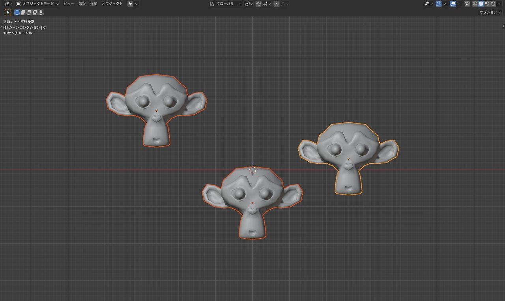
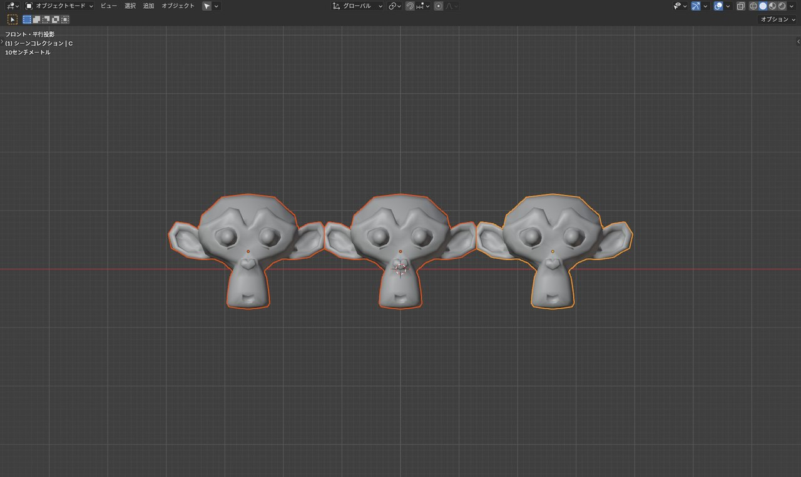
見どころ：左と真ん中のスザンヌが、右のスザンヌ（基準）と同じ高さに移ります。横の位置は変わりません。
編集モードのまま、一緒に編集する物を足したり外したりする道具です。クリック、ボックス、投げ縄、コレクション単位で操作できます。
場所「その他ツール」の中の折りたたみ「クイック複数編集」。アウトライナーのコレクションの右クリックメニューにも項目が入ります。
| 表示 | 働き |
|---|---|
| 既定クリックショートカット：マウス | ショートカットを自分で登録する時の目安にするマウスボタンを選びます。アドオンは自動ではショートカットを作りません。 |
| 操作：加算／減算／切替／単独 | ボタンを押した後に 3D ビューで物をクリックすると、その物を、一緒に編集する組に足す・外す・入れたり外したりする・その物だけにします。1 回クリックすると終わります。Esc か右クリックで取り消します。ヘッダーやほかのエリアを押しても取り消します。サイドバーとツールバーの帯の上は、透けて物が見えている所でも選べません。押すと知らせが出て、そのまま待ちます。パネルの別のボタンを押したい時は、先に Esc で取り消します。次の操作は画面の下の帯に出ます。下のキーマップ登録でショートカットに登録すると、マウスの下の物にすぐ働きます。ボタンは編集モードの時だけ押せます。 |
| 前回復元 | 直前に変える前の組に戻します。 |
| 箱で加算／箱で減算／箱で切替、縄で加算／縄で減算／縄で切替 | ボタンを押した後に 3D ビューをドラッグして四角い枠や投げ縄で囲むと、囲んだ物をまとめて足す・外す・入れたり外したりします。物を包む箱の角が枠の中に入ると、囲んだことになります。Esc か右クリックで取り消します。ドラッグの途中でも取り消せます。ドラッグはサイドバーとツールバーの帯の外から始めます。ショートカットに登録して、3D ビューの上で使うこともできます。組が空になる操作はできません。 |
| アクティブコレクション設定／コレクション加算／コレクション減算／コレクション切替 | アクティブなコレクションの中の物で組を作る・足す・外す・入れたり外したりします。 |
| アクティブ挙動 | 組を変えた後、どの物をアクティブにするかを選びます。 |
| アクティブと同種のみ／非表示・選択不可を尊重／同じコレクションのみ／同じ名前接頭辞のみ | 足せる物を絞り込みます。アクティブな物と同じ種類の物だけ、見えていて選べる物だけ、同じコレクションの物だけ、名前の頭が同じ物だけ、です。「同じ名前接頭辞のみ」がオンの時は「カスタム接頭辞」の欄も出ます。 |
| 背面候補の巡回選択／巡回タイムアウト／巡回ピクセル閾値／巡回候補上限 | 同じ所を続けてクリックすると、重なった奥の物へ順に移ります。続けてとみなす時間、カーソルのずれの許容、候補の数の上限を決めます。 |
| モード切替なし高速処理 | モードの切り替えがいらない時に、速い方法で処理します。 |
| ステータス表示／ビューポートHUD表示／HUD表示時間 | 結果を知らせる短い文を出すか、3D ビューに短い表示を出すか、その表示を何秒出すかです。 |
| 履歴保持数 | 「前回復元」のために覚えておく組の数です。 |
| キーマップ登録 | 各操作の登録 ID（「加算ID」「減算ID」など）の「コピー」が並びます。登録場所は 3Dビュー（「アウトライナーコレクションID」だけはアウトライナー）です。必要な物だけ登録します。 |
実例編集モードのまま別のメッシュを編集に加える（3 つのスザンヌで試した様子）
1 つのスザンヌを編集している途中で、同じコレクションのスザンヌを編集の組に足します。編集モードを出る必要はありません。
見どころ：前は真ん中のスザンヌだけに網目（頂点と辺）が出ています。後は左右のスザンヌにも網目が出て、3 つをまとめて編集できます。
実例クリックした物を編集の組に足す・外す（3 つのスザンヌで試した様子）
パネルの「加算」を押してから 3D ビューで物をクリックすると、その物が編集の組に入ります。「減算」なら組から外れます。

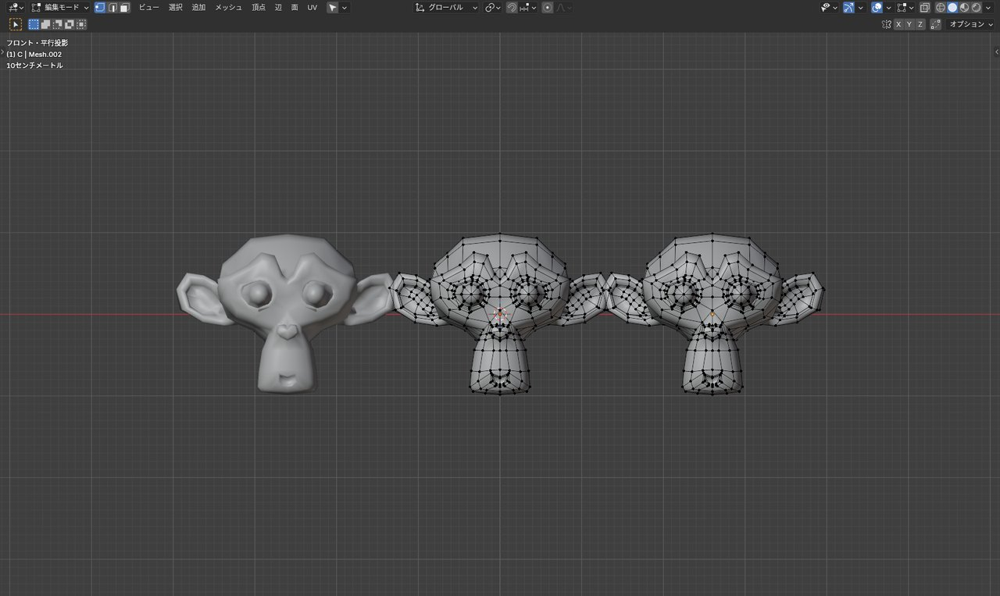

見どころ：網目（頂点と辺）が出ている物が、今編集できる物です。クリックするたびに、右のスザンヌの網目が出たり消えたりします。編集モードから出る必要はありません。
実例枠で囲んだ物をまとめて編集の組に足す（3 つのスザンヌで試した様子）
パネルの「箱で加算」を押してから 3D ビューをドラッグすると、枠で囲んだ物がまとめて編集の組に入ります。
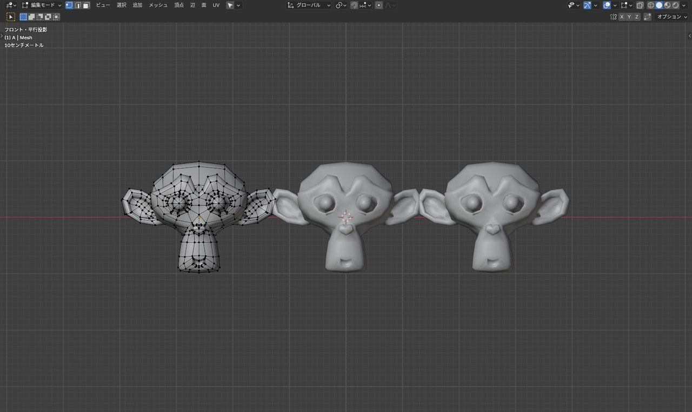
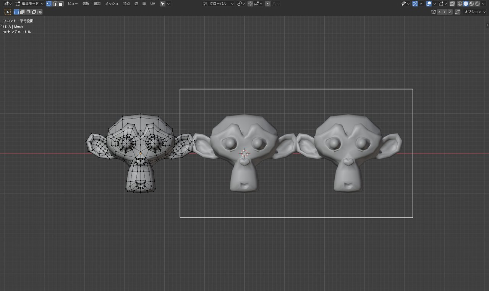
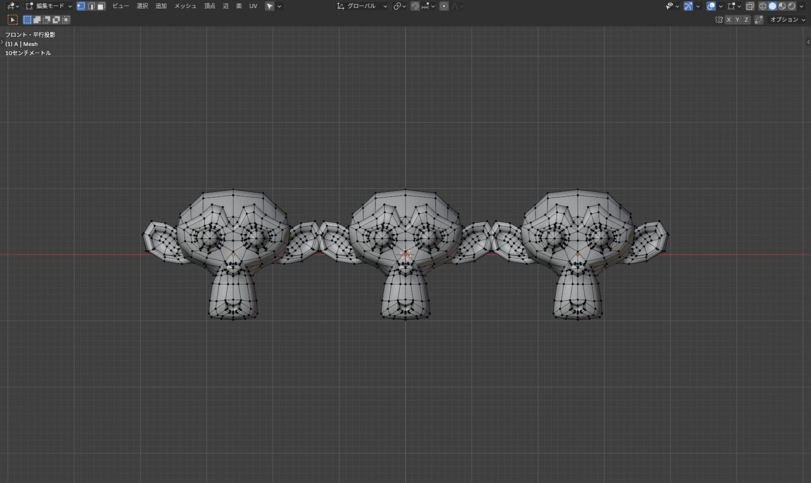
見どころ：ドラッグの間は白い枠が出ます。マウスを離すと、囲まれた 2 つのスザンヌにも網目が出ます。
実例同じメッシュを共有する物は組に入らない（3 つのスザンヌ（左はリンク複製）で試した様子）
左のスザンヌは、真ん中と同じメッシュを共有するリンク複製です。「コレクション加算」を押しても、左は組に入らず、別のメッシュの右だけが入ります。
見どころ：右には網目が出ますが、左には出ません。外した物の名前は画面の下に出ます。真ん中を編集すると、共有している左の形も一緒に変わります。
メッシュの編集モードで、選んだ所をつながった部品（アイランド）ごとに移動・回転・拡大縮小する道具です。Smart G-R-S とスマートギズモで働きます。
場所「その他ツール」の中の折りたたみ「アイランド変形」。機能のオン・オフは「常時機能切り替え」の「アイランド変形」で行います。
| 表示 | 働き |
|---|---|
| 個別の原点の時だけ使う | オンにすると、Blender のピボットポイントが「それぞれの原点」の時だけ部品ごとに変形します。他のピボットの時は普段の動きです。初めはオンです。 |
| キーマップ登録 | 「移動G登録ID」「回転R登録ID」「スケールS登録ID」と、オン・オフを切り替える「切り替え登録ID」です。プリファレンスのキーマップ「3Dビュー > メッシュ」の G・R・S をこれに置き換えて使います。機能がオフの時は Blender 標準の変形に渡ります。 |
メッシュの編集モードで選んだ頂点の、平均の位置と平均の向き（法線）に、物の原点や座標系を合わせる道具です。使うのは選んでいて見えている頂点です。見た目の形は変わりません。
場所「その他ツール」の中の折りたたみ「頂点法線アライナー」。
| 表示 | 働き |
|---|---|
| オブジェクトピボットを合わせる | 物の原点を選んだ頂点の平均の位置へ動かし、物の Z 軸の向きを平均の法線に合わせます。中のメッシュは逆に動かすので、見た目は変わりません。押して青くなっている間がオンで、初めはオンです。 |
| カスタム座標系を作成 | 「VertexNormal」という名前のカスタム座標系を作り（あれば上書きし）、今使う座標系にします。押して青くなっている間がオンで、初めはオンです。 |
| 選択頂点法線に合わせる | 上でオンにした処理を実行します。メッシュの編集モードの時だけ押せます。押せない時は下に「頂点・辺・面を選んでください。」と出ます。頂点・辺・面を 1 つ以上選んでから押してください。 |
| キーマップ登録 | ショートカットで使いたい時に、「法線整列登録ID」の「コピー」で登録 ID をコピーします。登録場所は 3Dビュー > メッシュです。 |
実例原点と向きを耳の面に合わせる（スザンヌで試した様子）
耳の先の面を選んで、スザンヌの原点をその場所へ移し、物の Z 軸の向きを選んだ面の平均の向き（法線）にそろえます。形は動きません。
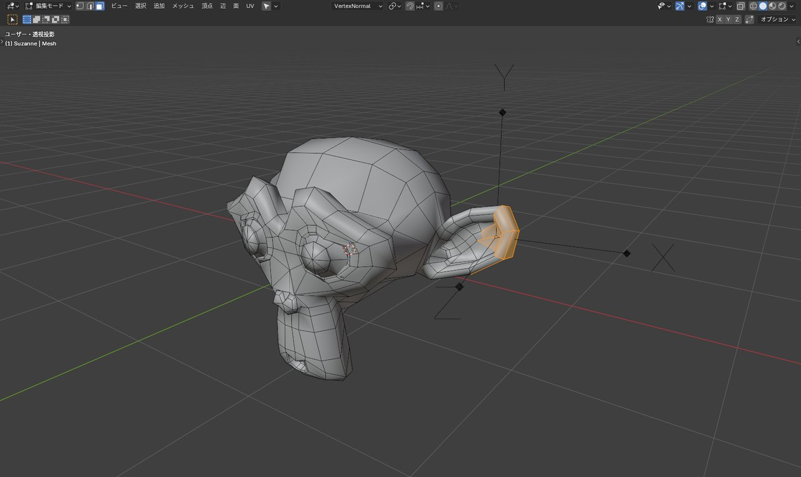
見どころ：物の軸の矢印（X・Y・Z の文字の付いた線）が、頭の中心から耳の先へ移り、向きも変わります。Z の矢印は、選んだ面の平均の向き（法線）を指すように向き直ります。画面の上の座標系の欄が「VertexNormal」になります。スザンヌの形はそのままです。
見えているかどうかと、他の形の陰になっているかどうかで選択をふるい分け、奥にある物を間違えて選びにくくする道具です。
場所「その他ツール」の中の折りたたみ「スマート選択ガード」。3D ビューの上の帯にも、オン・オフのボタンと、設定の小窓を開くボタンが出ます。
| 表示 | 働き |
|---|---|
| 選択遮蔽物を無視 | 今選んでいる物を、「隠す物」として扱うかどうかを切り替えます。押すたびに入れ替わります。 |
| 基本設定：スマート選択ガード | この道具を今のシーンで使うかどうかです。 |
| 透過表示OFF時も背面選択 | 透過表示がオフでも、ボックス選択・ラッソ選択などのドラッグを始めた瞬間（サークル選択は押した瞬間）から一時的に透過表示にして奥も選べるようにし、ボタンを離して選択が確定したら元に戻します。クリックだけの選択では切り替えません。 |
| 有効キー（キー割当／解除） | キーを押している間だけこの道具を効かせたい時に使います。「キー割当」を右クリックしてキーを割り当てます。「解除」で外します。キーが無い時は常に効き、「キー: 常時有効」と出ます。割り当てたキーはこの行に出ます。 |
| 選択動作（クリック選択フィルター／他オブジェクトの遮蔽を有効／複数編集の相互遮蔽を有効／ステータス表示） | 普通のクリック選択にも効かせるか、編集モードで編集中でない物を隠す物として扱うか、複数の物を編集している時にそれらどうしも隠す物として扱うか、効いた時に短い知らせを出すかです。 |
| 除外 | ここで選んだコレクション（とその中のコレクション）の物は、隠す物として扱いません。 |
| キーマップ登録 | 押している間だけ効かせる「ホールド有効化登録ID」、オン・オフを切り替える「常時切り替え登録ID」、選択遮蔽物を無視の「選択遮蔽物無視登録ID」です。登録場所は 3Dビューです。 |
「トランスフォーム」と同じ数値の欄を、小さな窓で開きます。今のモードに合わせて欄が変わり、下に Blender 標準のトランスフォームの欄も並びます。
場所「トランスフォーム」の中の「ポップアップを開く」から開きます。ショートカットで開きたい時は、このボタンを右クリックしてショートカットを割り当てます。
| 表示 | 働き |
|---|---|
| 座標系・「中点」／「個別」・「絶対値」／「差分」 | サイドバーと同じ選び欄です。 |
| コピー／ペースト／回転/スケール適用／全適用／カーソルへスナップ | サイドバーと同じアイコンのボタンです。その下に、ペーストの切り替え（位置／回転／スケール）もあります。 |
| オブジェクトモードの欄 | 「位置 X」「回転 X」「スケール X」「寸法 X」と、それぞれの Y・Z が出ます。 |
| ポーズモードの欄 | 「位置 X」「回転 X」「スケール X」と、それぞれの Y・Z が出ます。 |
| メッシュの編集モードの欄 | 「位置 X」と Y・Z に加えて、「頂点ベベル」「頂点クリース」「辺ベベル」「辺クリース」が出ます。 |
| カーソルへ／選択→カーソル／アクティブへ／床へ(Z=0) | サイドバーと同じスナップのボタンです。 |
箱の高さをちょうど 2 m にする。
結果：箱の高さが 2 m になります。
宙に浮いている物の高さを Z=0 にそろえる。
結果：選んだ物の原点（「中点」の時は全体の中心）が Z=0 に来ます。
回転と大きさの値を、今の見た目のまま確定する。
結果：見た目はそのままで、回転は 0、スケールは 1 になります。
標準の G・R・S の代わりに、HUD やスナップの付いた Smart G-R-S を使う。
結果：G・R・S を押すと Smart G-R-S が動きます。登録しなければ標準の G・R・S のままです。
1 つのメッシュを編集中に、隣のメッシュも一緒に編集する。
結果：マウスの下のメッシュも編集モードに入り、一緒に編集できます。「前回復元」で元の組に戻せます。
位置と向きはそのままで、大きさだけを別の物に揃える。
結果：大きさだけが手本と同じになります。使い終わったら切り替えを戻しておくと、次のペーストで全部貼れます。
アドオンが出ない・日本語にならない、など全部のアドオンに共通のことは、全体仕様書の「困った時」を見てください。
| アドオン | SmartTransform Suite（smart_transform_suite） |
|---|---|
| 版 | 1.0.0 |
| ZIP | SmartTransformSuite_1.0.0.zip |
| 大きさ | 664,769 バイト |
| SHA256 | 530cc66b9e26b677248526712c3ebf6486861273069b570a635906e6561df6d3 |
SmartTransform Suite 解説書 v1.0.0 ／ 2026-11-18 作成